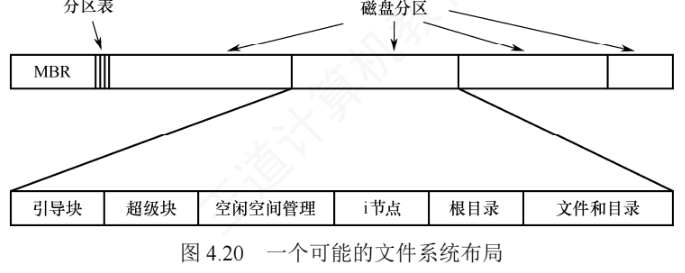
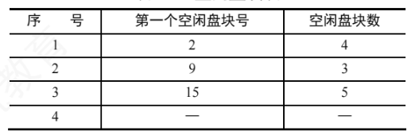
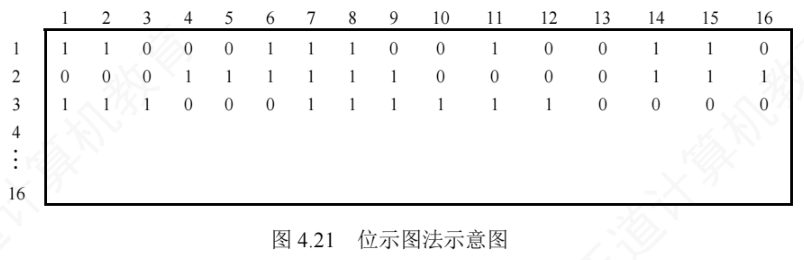
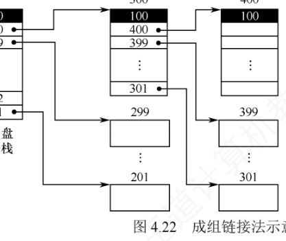
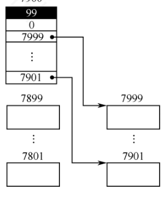
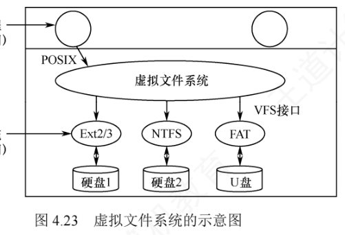
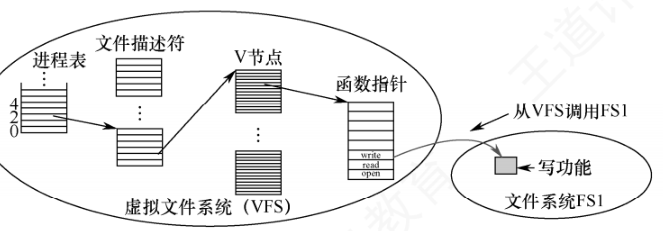

4.3 文件系统
前面两节解决了"文件本身如何组织"的问题，本节上升到系统整体层面：什么是文件系统？它由哪些部分组成、要完成哪些功能？学习本节时，请先带着这样两个问题：
- 什么是文件系统？
- 文件系统要完成哪些功能？
4.3.1 文件系统布局
"布局"回答的问题是：文件系统的各类信息分别存放在磁盘的什么位置、内存的什么位置。下面分磁盘与内存两个视角来考察。
1. 文件系统在磁盘中的结构
文件系统存放在磁盘上。一块磁盘通常被划分为一个或多个分区，每个分区中可以建立一个独立的文件系统。一个完整的文件系统一般要包含以下关键信息：引导操作系统的机制、磁盘总块数、空闲块的数量与位置、目录结构，以及所有具体文件的数据。图 4.20 展示了一种可能的文件系统布局。

先看磁盘级的两个部件：
- 主引导记录（Master Boot Record，MBR）：位于磁盘的 0 号扇区，负责引导计算机。MBR 之后紧随一个分区表，记录各分区的起始与结束地址，并标记其中一个为活动分区。系统加电后，BIOS 先把 MBR 读入内存并执行；MBR 识别出活动分区后，读取该分区的第一个扇区，即引导块。
- 引导块（boot block）：MBR 把控制权移交给引导块中的程序，由它负责加载并启动该分区中的操作系统。注意，每个分区都以引导块开头——即使当前没有安装可启动的操作系统，这一区域也照样保留，为将来部署系统留好位置。在 Windows 中，该区域称为分区引导扇区。
除引导块外，分区后续部分的布局因文件系统类型而异。UNIX/Linux 系统中的文件系统通常还包含以下组件：
- 超级块（superblock）：存放文件系统的所有关键信息，典型内容包括分区的总块数、块大小、空闲块数量及其指针、空闲 i 节点（inode）数量及指针等。系统启动或首次挂载该文件系统时，超级块会被读入内存；
- 空闲块信息：记录哪些磁盘块尚未分配，通常以位示图或空闲链表实现（这正是 4.3.2 节的主题）；
- i 节点区：一组 i 节点，每个文件对应一个 i 节点，其中完整描述该文件的各种属性；
- 根目录：作为整个目录树的起点；
- 磁盘的其余空间用于存放所有其他文件和目录的实际数据。
2. 文件系统在内存中的结构
只有磁盘上的结构，管理效率会很低。为高效管理文件系统并提升性能，系统还在内存中维护一组数据结构：这些信息在文件系统挂载时加载，运行期间动态更新，卸载时释放。典型的内存结构包括：
- 内存中的挂载表（mount table）：记录每个已挂载文件系统分区的有关信息，如设备标识、挂载点、文件系统类型及挂载选项等；
- 内存中的目录项缓存：缓存最近访问过的目录内容，减少对磁盘的重复读取，加快路径解析速度；
- 系统级的打开文件表：为每个当前打开的文件维护一个 FCB 的副本，包含文件状态、访问权限、读/写指针、打开计数等全局信息；
- 进程级的打开文件表：每个进程拥有独立的一张打开文件表，记录该进程所使用的文件描述符，以及指向系统级打开文件表中对应表项的指针，从而实现进程与全局资源的关联。
4.3.2 文件存储空间管理
如 4.2 节所述，文件的物理结构包含两个方面：文件的分配方式与文件存储空间的管理。后者专门负责记录磁盘中哪些块是空闲的，并提供对这些块进行分配与回收的机制。由于系统以固定大小的物理块为单位与外存交换数据，存储空间管理的核心任务就是高效地组织和管理空闲块——为此，系统需要维护描述空闲块状态的数据结构，而这正是下面几种管理方法所要解决的问题。
1. 空闲表法
空闲表法属于连续分配方式，其思想来源于内存的动态分区分配：为每个文件分配一块物理上连续的磁盘区域。系统为外存中的所有空闲区维护一张空闲表，每个空闲区对应一个表项，包含序号、第一个空闲盘块号和空闲盘块数等信息，并按起始盘块号递增的顺序排列，如表 4.2 所示。

读一下这张表：序号 1 的表项表示从 2 号盘块起有一个共 4 个盘块（即 2～5 号盘块）的空闲区，序号 2、3 的表项同理，序号 4 的"—"是表尾标志。
盘块的分配：空闲盘区的分配策略与内存动态分区分配一致，通常采用首次适应（First Fit）、最佳适应（Best Fit）等算法。为新创建的文件分配空间时，系统顺序扫描空闲表，找到第一个大小满足需求的空闲区便分配给用户，并立即更新空闲表。
盘块的回收：回收用户释放的空间时，同样借鉴内存的回收机制——判断回收区是否与空闲表中相邻的前区或后区在物理上连续，若相邻则合并为一个更大的空闲区，以减少碎片。
优点：分配效率较高，能显著减少磁盘 I/O 次数；尤其对于小型文件（如占用 1～5 个盘块），连续分配不仅实现简单，还能充分发挥磁盘顺序读/写的性能优势。
2. 空闲链表法
空闲链表法把所有空闲盘区组织成一条链表。根据链表节点粒度的不同，可分为两类。
（1）空闲盘块链——以单个盘块为单位，把所有空闲盘块链接成一条链，每个盘块包含一个指向下一个空闲盘块的指针。分配时，从链首依次摘下所需数量的盘块分配给用户；回收时，把释放的盘块逐个插入链尾。优点：单个盘块的分配与回收操作极为简单。缺点：为一个文件分配多个盘块需要多次访问链表，效率较低；且管理粒度细，链通常很长，管理开销大。
（2）空闲盘区链——以空闲盘区（一组连续的盘块）为单位构建链表，每个盘区包含两项信息：本盘区的盘块数和指向下一个空闲盘区的指针。分配时，采用与内存动态分区分配类似的策略（如首次适应算法），查找满足需求的空闲盘区进行分配；回收时，需判断回收区是否与链表中相邻的空闲盘区在物理上连续，若相邻则合并，从而有效减少外部碎片。它的优缺点与空闲盘块链恰好相反：优点是分配与回收的效率较高，且链的长度较短；缺点是分配与回收的过程较为复杂，需要处理盘区的分割与合并。
| 比较项 | 空闲盘块链 | 空闲盘区链 |
|---|---|---|
| 链表节点 | 单个空闲盘块 | 一个空闲盘区（连续的若干盘块），含盘块数 + 指针 |
| 分配 | 从链首依次摘取单个盘块，简单 | 按首次适应等策略找整块盘区，效率较高 |
| 回收 | 逐个插入链尾，简单 | 需判断物理相邻并合并，较复杂 |
| 链的长度与开销 | 链长，管理开销大 | 链短，开销小 |
3. 位示图法
位示图法利用二进制的一位来表示磁盘中一个盘块的使用状态：磁盘上的每个盘块都对应位示图中的一个比特位。当该位为"0"时，表示对应盘块空闲；为"1"时，表示已被分配。因此，一个由 \(m \times n\) 位组成的位示图，恰好可描述 \(m \times n\) 个盘块的使用情况，如图 4.21 所示。

盘块的分配，分三步：
- 顺序扫描位示图，找到一个（或一组）值为"0"的位；
- 把找到的比特位换算成对应的盘块号。设该位位于位示图中的第 \(i\) 行、第 \(j\) 列（行、列编号从 1 开始），每行包含 \(n\) 位，则对应盘块号 \(b\) 按下式计算： $$b = n(i-1) + j$$
- 修改位示图，置 map[i, j] = 1。
以图 4.21 为例演练一遍（该位示图每行 \(n = 16\) 位，扫描发现第 1 个"0"位位于第 1 行第 3 列）：
已知：位示图每行 n = 16 位，行、列编号从 1 开始
扫描找到第 1 个"0"位：第 i = 1 行，第 j = 3 列
代入公式：b = n(i−1) + j = 16 × (1−1) + 3 = 0 + 3 = 3（号盘块）
即该位对应 3 号盘块，将其分配，并置 map[1, 3] = 1盘块的回收，分两步：
- 把回收盘块的盘块号 \(b\) 换算回位示图中的行号 \(i\) 和列号 \(j\)，计算公式为： $$i = (b-1)\,\text{DIV}\,n + 1 \qquad j = (b-1)\,\text{MOD}\,n + 1$$
- 修改位示图，置 map[i, j] = 0。
回收 3 号盘块（n = 16）：
行号 i = (b−1) DIV n + 1 = (3−1) DIV 16 + 1 = 0 + 1 = 1（第 1 行）
列号 j = (b−1) MOD n + 1 = (3−1) MOD 16 + 1 = 2 + 1 = 3（第 3 列）
即修改位示图第 1 行第 3 列，置 map[1, 3] = 0，该盘块恢复为空闲优点：查找高效，能快速在位示图中找到一个或一组相邻的空闲盘块，便于实现连续分配；位示图结构紧凑，占用内存空间极小，可常驻内存，避免频繁访问磁盘。缺点：位示图的大小会随磁盘容量的增加而增大，因此更适用于小型或中等规模的系统。
4. 成组链接法
空闲表法和空闲链表法均不适用于大型文件系统——磁盘容量一大，管理结构本身就会过度膨胀。为此，UNIX 系统采用成组链接法，它融合了前两种方法的思想，有效控制了管理结构的规模。
基本思想：把所有空闲盘块划分为若干组（例如每组 100 个盘块）。除最后一组外，每组的第一个盘块用作索引块，记录下一组中所有空闲盘块的块号及其数量；这些索引块依次链接，形成一条链。文件系统挂载时，第一组的空闲盘块信息（包括块号列表和数量）被预先加载到内存的一个专用栈结构中，称为空闲盘块号栈。
例如，若系统空闲区为第 201～7999 号盘块，则分组如下：第一组为 201～300 号，次末组为 7801～7900 号，最末组为 7901～7999 号（共 99 个盘块）。最末组的块号由前一组的最后一个盘块（7900 号）记录，而该盘块中存放的第一个盘块号为"0"，用作整条空闲链的结束标志，如图 4.22 所示。


简而言之，成组链接法通过"分组 + 索引 + 链接"的设计，既避免了长链表的遍历开销，又无须维护完整的空闲表，从而在可扩展性与性能之间取得了良好平衡。
盘块的分配：从空闲盘块号栈顶取出一个盘块号并分配给用户，栈指针相应上移，栈中空闲盘块数减 1。若此时栈指针到达栈底（表示当前组已分配完毕），则需要读取栈底那个盘块号所对应物理盘块的内容——其中保存的正是下一组的空闲盘块号列表；先把这个内容整体读入栈以更新空闲盘块号栈，再把原栈底所指的盘块（其索引作用已完成）分配出去。
例如在图 4.22 中，系统先依次分配 201～299 号盘块；当需要分配 300 号盘块时，首先把 300 号盘块的内容（下一组的块号列表）读入空闲盘块号栈，随后将 300 号盘块本身分配给用户。
盘块的回收：系统把释放的盘块号压入空闲盘块号栈顶部，栈指针相应下移，栈中空闲盘块数加 1。若此时栈已满（如达到 100 项），则需要把当前栈中记录的全部盘块号写入这个新回收的盘块，使它成为新的索引块；随后栈中只保留该盘块号（作为新的栈底），并将栈中空闲盘块数重置为 1，由它开始记录新一组的空闲盘块。
描述空闲空间的数据结构（如空闲盘块号栈）以及文件系统的关键信息，通常存储在磁盘的固定位置。在 UNIX 系统中，这一区域称为超级块。文件系统挂载时会把它读入内存，并在运行过程中持续维护内存副本与磁盘副本的一致性，从而确保空闲空间管理的正确性与可靠性。
4.3.3 虚拟文件系统
现代操作系统通常需要支持多种文件系统，如 ext4、NTFS、FAT 等。这些文件系统在磁盘组织方式、元数据格式和操作方法上各不相同，若应用程序要为每种文件系统分别编写代码，不仅开发困难，系统的可维护性也会显著降低。为此，操作系统在用户程序与具体文件系统之间引入了虚拟文件系统（Virtual File System，VFS），由它向上提供统一的文件操作接口，如图 4.23 所示。有了 VFS，用户程序无须关心底层使用的是哪种文件系统：无论文件存储在何种设备上、采用何种格式，程序只需调用标准系统调用（如 open()、write() 等）即可完成操作；VFS 负责把这些通用请求转发给相应的文件系统处理，让用户无须察觉底层文件系统的差异。

VFS 采用面向对象的设计思想，抽象出一个通用的文件系统模型，并把其中的公共特性封装为四种对象。每个对象都包含数据成员和一组操作函数指针，这些函数由具体的文件系统提供；只要新的文件系统实现了 VFS 定义的接口，就能被系统识别、挂载并使用。
（1）超级块对象——表示一个已挂载的文件系统，对应磁盘上的超级块，记录该文件系统的全局信息，如块大小、总块数、空闲块数量以及文件系统类型等。文件系统挂载时，VFS 把磁盘超级块读入内存，创建对应的超级块对象，并设置好相关操作函数，如分配 inode、同步元数据等。
（2）V 节点对象——VFS 中最重要的抽象对象，用于在内存中表示一个具体的文件或目录。每个 vnode 对象关联底层某个具体文件系统的索引节点（如 ext4 的 inode），本质上是对各类文件系统元数据的统一封装：向上为系统调用提供统一的文件属性（如权限、大小、时间戳等），向下通过指针指向该文件系统私有的元数据结构。vnode 对象仅在文件首次被访问时动态创建于内存，引用计数归零后自动释放；其内部包含一组标准操作函数指针（如 read、write 等），VFS 通过这些指针把上层请求分发至相应文件系统的具体实现，以屏蔽不同文件系统的差异。
（3）目录项对象——表示路径中的一个组成部分，如"/home/user/file"中的"user"。目录项对象并不直接对应磁盘上的某个固定结构，而是 VFS 在解析路径时动态生成的内存缓存；每个目录项保存文件名、指向父目录项和子目录项的指针，以及指向对应 V 节点的指针。多个目录项组合起来形成逻辑上的目录树；VFS 通过缓存常用目录项，有效加快后续路径查找的速度。
（4）文件对象——表示一个进程所打开的文件，可以理解为"文件在进程中的运行实例"，正如进程是程序的运行实例。进程调用 open() 时，内核为其创建一个文件对象；调用 close() 且引用计数归零时，该对象被销毁。文件对象保存当前读/写位置（文件指针）、访问模式（读/写或追加）和引用计数等信息，并包含指向对应 V 节点和目录项的指针；它提供的 read、write、seek 等操作接口，最终由 V 节点转发至底层文件系统执行。
下面以 write() 为例说明 VFS 的工作过程：进程调用 write(fd, buf, n) 时，内核首先进入 VFS 层，执行 sys_write() 函数；随后根据文件描述符 fd 定位到对应的文件对象，并通过该对象获取其关联的 V 节点；接着，VFS 利用 V 节点中预置的写操作函数指针，调用目标文件系统的具体写方法；该文件系统将数据写入缓冲区，最终通过设备驱动完成磁盘写入。write() 系统调用的操作过程如图 4.24 所示。

总结：对用户程序而言，所有文件操作均通过 VFS 提供的统一接口完成，无须关心底层是 ext4、NTFS 还是其他文件系统；VFS 借助前述四类对象屏蔽了不同文件系统的实现细节，使其在系统中呈现出一致的行为。需要强调的是，VFS 本身并不是一种真正的文件系统——它仅存在于内存之中，不占用磁盘空间，随系统启动而建立，随系统关闭而释放。
4.3.4 文件系统挂载
如同文件在使用之前必须先打开一样，文件系统在被进程访问之前也必须先安装，也称挂载（Mounting）。把某个设备上的文件系统挂载到目录树中的一个目录后，即可通过该目录访问该设备上的文件。此处的"设备"是指逻辑上的设备——例如同一磁盘的不同分区可视为多个独立设备。
Windows 的做法：采用驱动器号（如 C:、D:）标识分区（也称卷），每个分区拥有独立的目录树结构，并关联一个已挂载的文件系统；文件路径通常表示为 drive-letter:\path\to\file 的形式。访问时，操作系统根据驱动器号定位对应的文件系统，再在其目录结构中查找目标文件。较新版本的 Windows 也支持把文件系统挂载到目录树下的任意目录（称为装入点），其行为与 UNIX 类似。系统启动时，Windows 会自动探测所有存储设备，并挂载其所识别的文件系统。
UNIX 的做法：以单一的根文件系统为基础，该文件系统在系统启动时由内核直接挂载，通常包含内核映像等关键文件。除根文件系统外，所有其他文件系统都必须挂载到根文件系统中的某个目录下才能被访问——既可在系统初始化阶段自动挂载，也可由用户手动挂载。用于挂载的目录称为挂载点（mount point）。
例如，把位于磁盘 /dev/fd0 上的 ext2 文件系统，通过 mount 命令挂载到目录 /flp：
mount -t ext2 /dev/fd0 /flp若需要卸载该文件系统，则使用 umount 命令。
学到这里可以用两条主线收束全章：其一，引入一种新的抽象数据类型——文件，从逻辑结构（如流式、记录式）和物理结构（如连续、链接、索引）两个维度展开；其二，阐述操作系统如何管理文件，包括多文件的组织方式（目录结构）、用户请求的处理机制（如系统调用、VFS 分发）以及底层存储的调度策略（磁盘管理）。仅了解宏观框架是远远不够的，掌握框架正是为了更好地深入微观细节——请通过反复做题与思考，不断深化对知识点的理解与运用。
4.3.5 本节小结
本节开头提出的两个问题，参考答案如下。
1）什么是文件系统？操作系统中负责管理和存储文件信息的软件机构称为文件管理系统，简称文件系统。文件系统由三部分组成：与文件管理相关的软件、被管理的文件，以及实现文件管理所需要的数据结构。
2）文件系统要完成哪些功能？对用户而言，文件系统最主要的功能是支持对文件的基本操作，使用户能够按名存取和查找文件，将文件组织为合适的逻辑结构，并提供基本的文件共享与保护机制。对操作系统而言，文件系统还需要管理与磁盘之间的信息交换，完成文件逻辑结构到物理结构的映射，合理组织文件在磁盘上的存放，并采用高效的文件布局策略与磁盘调度方法，以提升系统整体性能。
最后，把本节的四种空闲盘块管理方法放在一起对比，帮助记忆：
| 方法 | 分配方式 | 分配要点 | 回收要点 | 特点与适用 |
|---|---|---|---|---|
| 空闲表法 | 连续分配 | 按首次适应、最佳适应等算法扫描空闲表，分配连续盘区并更新表 | 判断与前后空闲区是否物理相邻，相邻则合并 | 分配效率高，发挥顺序读写优势；适合小型文件 |
| 空闲盘块链 | 离散分配 | 从链首逐个摘取盘块 | 逐个插入链尾 | 单块操作简单；多块分配效率低、链长 |
| 空闲盘区链 | 离散分配 | 按动态分区策略寻找合适的空闲盘区 | 与相邻盘区合并 | 效率较高、链短；需处理盘区分割与合并 |
| 位示图法 | 连续、离散分配均适用 | 扫描找"0"位，按 \(b = n(i-1)+j\) 换算盘块号，置 1 | 按 DIV/MOD 公式换算行列号，置 0 | 结构紧凑、可常驻内存；位图大小随磁盘容量增大 |
| 成组链接法 | 连续分配与离散分配相结合 | 从空闲盘块号栈顶取号；分到栈底号时先装入下一组信息再分配 | 压入栈顶；栈满则整栈写入新索引块，栈中只留该块号 | UNIX 采用；兼顾可扩展性与性能，适合大型文件系统 |